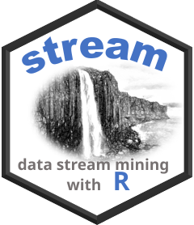
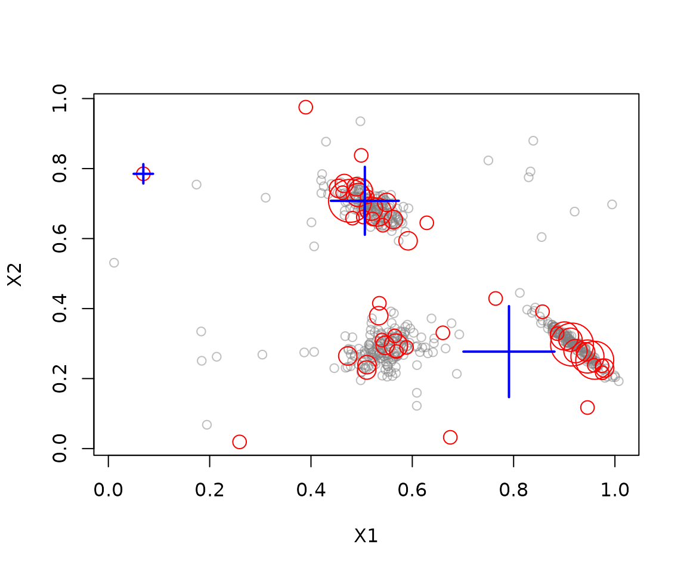

Getting started with streamMOA
Michael Hahsler
Source:vignettes/streamMOA.Rmd
streamMOA.RmdThe streamMOA package connects stream to
clustering algorithms from MOA (Massive Online Analysis). This vignette
shows how to create a data stream, process it with a MOA clusterer, and
inspect the resulting micro- and macro-clusters. Java 8 or later is
required.
Installation
Install the package from CRAN and load it together with
stream:
install.packages(c("stream", "streamMOA"))Create a data stream
DSD_Gaussians() from stream generates a
stream with three clusters and a small amount of noise. Request a finite
number of observations with get_points():
stream <- DSD_Gaussians(k = 3, d = 2, noise = 0.05)
get_points(stream, n = 5)
#> X1 X2 .class
#> 1 0.5458535 0.6891478 1
#> 2 0.5751342 0.3031995 2
#> 3 0.5070179 0.2583102 2
#> 4 0.5436979 0.3234242 2
#> 5 0.6294917 0.2378384 2Stream observations are generated as requested, so plotting or
retrieving points advances the stream. Set info = FALSE
when only feature values are needed and cluster labels are not
required.
plot(stream, n = 500)
Cluster the stream
DSC_CluStream() creates a MOA-based online clusterer.
The m parameter sets the maximum number of micro-clusters,
while horizon controls the time window. The optional
k argument enables weighted k-means reclustering to produce
macro-clusters. Use update() to train the clusterer on
incoming observations:
clustering <- DSC_CluStream(m = 50, horizon = 100, k = 3)
update(clustering, stream, n = 500)
clustering
#> CluStream
#> Class: moa/clusterers/clustream/WithKmeans, DSC_MOA, DSC_Micro, DSC
#> Number of micro-clusters: 50
#> Number of macro-clusters: 3Inspect the result
The micro-clusters summarize recent observations. Macro-clusters group those summaries into a smaller number of clusters. Retrieve their centers or plot them with the stream:
get_microclusters(clustering)
#> X1 X2
#> 1 0.96016355 0.25227255
#> 2 0.52182990 0.65601731
#> 3 0.56865733 0.27717631
#> 4 0.59170698 0.59359064
#> 5 0.47697525 0.70780938
#> 6 0.56252095 0.65414713
#> 7 0.62859918 0.64503513
#> 8 0.94575395 0.26314770
#> 9 0.90051402 0.32183734
#> 10 0.47266308 0.26457753
#> 11 0.06906004 0.78503328
#> 12 0.49812901 0.73775921
#> 13 0.88587126 0.32857369
#> 14 0.67503717 0.03219842
#> 15 0.66036942 0.33072764
#> 16 0.95921384 0.23785634
#> 17 0.51005490 0.22444148
#> 18 0.85708086 0.39108658
#> 19 0.46590908 0.75736211
#> 20 0.49915306 0.83779142
#> 21 0.91234022 0.31101102
#> 22 0.54019816 0.31004215
#> 23 0.56780590 0.29400499
#> 24 0.94228753 0.27649655
#> 25 0.58861360 0.28917296
#> 26 0.97970058 0.22987894
#> 27 0.54200968 0.63802303
#> 28 0.46254419 0.73116493
#> 29 0.45423587 0.74317222
#> 30 0.51865811 0.68553151
#> 31 0.53498163 0.41515597
#> 32 0.48949698 0.74816497
#> 33 0.56540750 0.32188795
#> 34 0.54953709 0.70341318
#> 35 0.94582852 0.11728255
#> 36 0.48188183 0.65824329
#> 37 0.51111227 0.71930316
#> 38 0.53377445 0.37971801
#> 39 0.38967593 0.97536916
#> 40 0.97494889 0.21642202
#> 41 0.54640408 0.29501257
#> 42 0.92216660 0.27849330
#> 43 0.51054455 0.23977742
#> 44 0.53112220 0.67558870
#> 45 0.76448880 0.42889785
#> 46 0.49323525 0.72460230
#> 47 0.50321580 0.66157570
#> 48 0.25899523 0.01903151
#> 49 0.91534332 0.29725388
#> 50 0.97447349 0.23670116
get_macroclusters(clustering)
#> X1 X2
#> 1 0.06906004 0.7850333
#> 2 0.79085288 0.2770008
#> 3 0.50634679 0.7078762
plot(clustering, stream, type = "both")
Other clusterers include DSC_DenStream(),
DSC_ClusTree(), DSC_DStream_MOA(),
DSC_BICO_MOA(), and DSC_StreamKM(). See their
help pages and the package vignette Introduction to streamMOA
for algorithm details, options, and additional examples.